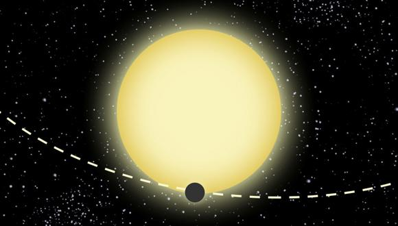
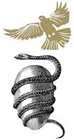

Publicado en 2013
El debate Cuero - Bernal
- 2013-11-11
Si bien la ciencia en esencia es imparcial, la objetividad de ella tiende a perderse cuando desconocemos mucho del medio o cuando solo por nuestra condición humana dejamos que la ciencia deje su ideal. Y en ello, se crean discusiones de carácter casi absurdo por falta de definiciones adecuadas y de una cultura general en ciencia y tecnología, y su impacto no solo en la comunidad general sino incluso, hasta en los mismos académicos. Recientemente, y aún en continua discusión en los medios, el caso del científico colombiano Dr. Raúl Cuero, nos enseño la falta de cultura y de criterio de nuestro periodismo científico y de la falta de ética en la investigación científica de algunos casos, sin desmeritar en ningún momento sus competencias en ciencia. Todo sale a la luz en un artículo del Dr. Rodrigo Bernal que salió en El Espectador, Los dudosos honores del científico colombiano Raúl Cuero, a lo cual siguieron distintos debates y posiciones de respaldo tanto a Bernal (ejemplo en El Espectador que hace una recopilación, y carta de defensa de Carolina Murcia indicando los logros del Dr. Bernal) como a Cuero (ejemplo en La Silla Vacía, el cual me duele por pretende un fuerte apoyo de criterios objetivos, pero sin saberlos usar, y su autodefensa).
¿Tetracuark?
- 2013-06-18
Bueno, resulta que el mundo de la física de partículas viene en un continuo agitar, y nuevos datos y modelos surgen a partir de los experimentos realizados en los grandes aceleradores de partículas (esos túneles enormes en los cuales se hace que partículas a muy alta velocidad colisionen).
Order and Origin of the Greek Cosmos
- 2013-06-18
Second article based on my talk on «Greek Cosmogony and Cosmology» of astronomy in the Parque de los Deseos on May 14, 2013 (the first was Greek Cosmogony).
Orden y origen del cosmos griego
- 2013-06-18
Segundo artículo basado en mi charla de «Cosmogonía y cosmología griega» de astronomía en el Parque de los Deseos del 14 de mayo de 2013 (el primero fue Cosmogonía griega).
El planeta de Einstein
- 2013-06-02
El planeta de Einstein como ha sido llamado el exoplaneta Kepler-76b es la muestra de la reutilización de los datos del proyecto Kepler para la búsqueda de nuevos exoplanetas.
Greek Cosmogony
- 2013-05-26
The cosmogony and cosmology of the ancient Greeks were deeply intertwined. While its cosmological elements have been detached from mythology since the reasoning of the first Greek philosopher, Thales of Miletus, the origin of some of these elements can be traced back to it.
Cosmogonía griega
- 2013-05-26
La cosmogonía y cosmología de los antiguos griegos se encuentra profundamente vinculada. Sus elementos cosmológicos si bien prescinden de la mitología desde los razonamientos del primer filósofo griego, Tales de Mileto, se puede rastrear el origen de algunos de estos en ella. Los relatos de la cosmogonía griega pueden ubicarse en los textos de Homero y la Teogonía de Hesíodo, en los que se ilustra la estructura de su universo y sus dioses.
Asimov in Science
- 2013-01-18
While Isaac Asimov is commonly known as a science fiction and mystery writer (the latter being less widely known) and a great science popularizer, he was also a scientist. This article aims to highlight Asimov’s scientific contributions and academic background, often overshadowed by his literary achievements.
Asimov en la ciencia
- 2013-01-18
Isaac Asimov si bien por el común de la gente es conocido solo como un escritor de ciencia ficción y misterio (esta ultima temática menos conocida por el común) y como un gran divulgador de la ciencia, también fue un científico.
Newton’s Double Birthday and the Gregorian Calendar
- 2013-01-04
The commemoration of Sir Isaac Newton’s birth presents a curiosity: it is celebrated on both December 25, 1642, and January 4, 1643. This dual observance stems from the shift between the Julian and Gregorian calendars. This article explores the reasons behind this double celebration, delving into the historical context of the calendar reform and its impact on the dating of historical events.
El doble cumpleaños de Newton y el calendario gregoriano
- 2013-01-04
Hoy es una nota de tipo curiosa, ya que algunos recordaran que hace 10 días muchos conmemoramos el cumpleaños de Sir Isaac Newton, quien había nacido el 25 de diciembre de 1642. Sin embargo, hoy 4 de enero encontramos como en distintos perfiles sociales, publicaciones y blogs vuelven a conmemorar la fecha que recibió a uno de los revolucionarios de la física de su tiempo y a quien debemos gran parte de lo que nos enseñan en las clases de física de colegio y de primeros semestres de universidad.